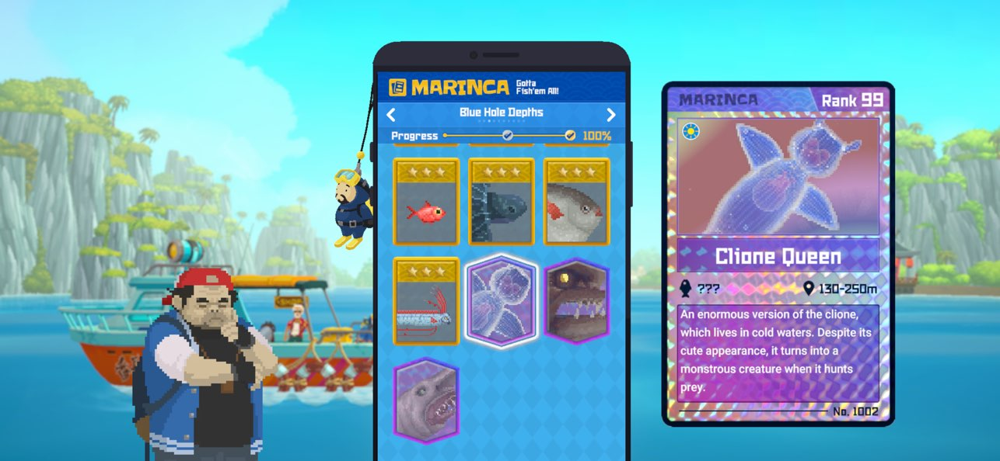
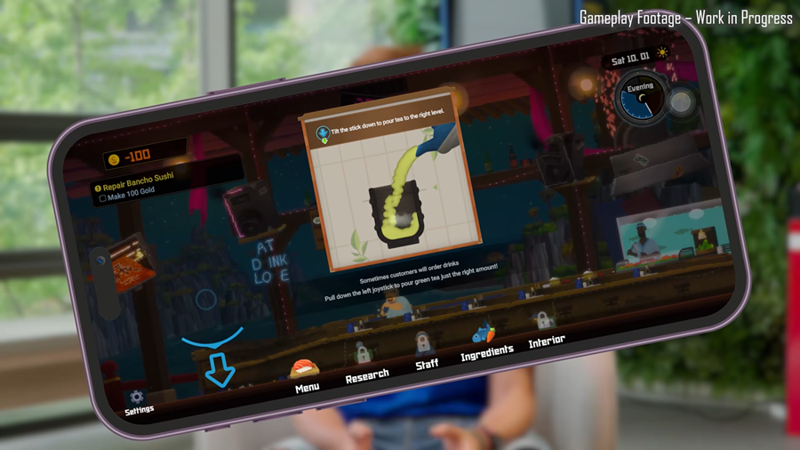
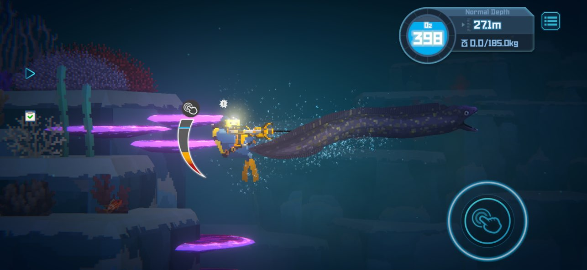

데이브더다이버모바일 PC판이랑 뭐가 다를까, 조작방식부터 콘텐츠 차이까지 정리
PC로 데이브 더 다이버 재밌게 하신 분들, 모바일판 나온다는 소식 듣고 "그래서 폰으로 하면 뭐가 달라지는데?" 궁금하셨을 텐데요. 저도 출시 소식 보자마자 제일 먼저 든 생각이 그거였어요 — 이식판이라고 해서 대충 축소만 시켜놓은 건 아닐까 하는 걱정이요.
민트로켓에서 만든 데이브 더 다이버 모바일 버전이 9월 17일에 애플 앱스토어와 구글플레이로 전 세계에 정식 출시됐거든요. 출시일이랑 과금 구조는 예전 글에서 이미 자세히 짚어드렸으니, 오늘은 그건 짧게만 넘어가고 다들 궁금해하실 'PC판이랑 진짜 뭐가 다른가'만 콕 집어서 파볼게요.

이게 원래 PC·콘솔로 만나던 그 얼굴이에요. 오늘은 이 친구랑 모바일판을 나란히 놓고 비교해볼게요.
이미지: 스팀 공식 스토어 · 네이버 본문엔 받아서 재업로드 권장
콘텐츠는 PC판이랑 완전히 똑같아요
결론부터 말씀드리면, 콘텐츠 자체는 PC·콘솔판이랑 하나도 다르지 않아요. 낚시 어드벤처 '드렛지(DREDGE)' 콜라보 콘텐츠도 그대로 들어가 있고, 대형 확장 DLC '인 더 정글'도 모바일에서 똑같이 구매해서 즐길 수 있습니다. 본편 사시는 분께 코브라의 보트 스킨·디지털 아트북·오리지널 사운드트랙으로 묶인 '디지털 엑스트라'를 무료로 얹어주는 것도 플랫폼 상관없이 동일하고요.
이미 중국에서는 지난 2월 먼저 출시돼 100만 장 넘게 팔리고 앱스토어·탭탭 유료 게임 차트 1위까지 찍은 이력이 있으니, 콘텐츠 완성도 자체는 이번 글로벌 출시 전에 어느 정도 검증이 끝난 셈이에요.

해양생물 도감 채우는 재미도 PC판이랑 똑같이 이어져요.
이미지: 앱스토어 공식 스토어 · 네이버 본문엔 받아서 재업로드 권장
낚시나 요리 파트만이 아니라, 어두운 동굴을 헤치고 들어가 보물상자를 여는 탐사 콘텐츠도 예외 없이 그대로 넘어왔어요. 이런 디테일까지 다 챙겨 온 걸 보면, 이식이 아니라 그냥 같은 게임을 폰으로 옮겨온 수준이라는 말이 맞는 것 같더라고요.

탐사하다 보물상자 여는 손맛도 PC판이랑 똑같이 이어져요.
이미지: 인벤 · 네이버 본문엔 받아서 재업로드 권장
그럼 뭐가 다른가요? 모바일에만 있는 기능 3가지
달라지는 건 콘텐츠가 아니라 조작이랑 인터페이스, 이 두 가지예요. 모바일판에만 새로 붙은 기능이 세 가지 있는데, 표로 정리하면 이렇습니다.
| 기능 | 뭐가 달라지나 |
|---|---|
| 반쵸 스시 자이로 조작 | 폰을 실제로 기울여야 차(녹차)가 부어지는 동작 조작 |
| 시야거리(줌 레벨) 3단계 | 플레이 환경에 맞춰 화면 확대·축소 폭 선택 |
| 어인족 마을 패스트트래블 | 마을 안 NPC 사이를 빠르게 이동 |
가장 눈에 띄는 건 역시 첫 번째예요. 찻주전자를 기울여 따르듯, 폰을 진짜로 기울여야 차(녹차)가 부어지는 방식이라 초밥집 파트에서 손맛이 확 살아난다고 하더라고요. 화면 터치만으로 끝내는 대신 손목까지 같이 움직여야 하는 셈이니, PC 마우스 조작이랑은 아예 다른 재미가 생긴 거죠.
폰 기울여서 차 따르는 그 장면, 확보되는 대로 채워둘게요.
자이로 조작, 게임 전체에 다 쓰이나요?
아니요, 자이로는 반쵸 스시 파트처럼 일부 콘텐츠에만 쓰이고 기본 조작은 터치예요. 평소 이동·채집·전투는 화면을 터치하는 방식이 기본이고, 자이로는 특정 장면에서만 보조로 켜지는 구조라고 보시면 돼요. 그러니 "폰 흔드는 게 부담스러운데 괜찮을까" 걱정하셨던 분들도 크게 걱정 안 하셔도 괜찮아요.

채집·전투 같은 평소 플레이는 이렇게 터치 버튼이 기본이에요.
이미지: 앱스토어 공식 스토어 · 네이버 본문엔 받아서 재업로드 권장
시야거리·패스트트래블은 왜 생겼나요
둘 다 작은 화면에서 덜 답답하게 플레이하라고 새로 붙은 편의 기능이에요. 시야거리는 화면 확대·축소 폭을 3단계로 딱 나눠서, PC 모니터보다 좁은 폰 화면에서도 원하는 만큼 시야를 조절할 수 있게 한 거고요. 패스트트래블은 '어인족 마을' 안에서 NPC들 사이를 빠르게 오갈 수 있게 해주는 기능이라, 마을 안 대화나 거래를 자잘하게 반복할 때 이동 시간을 줄여줘요. 다만 이게 마을 전체 맵을 넘나드는 전역 이동까지 지원하는 건지는 공식 자료만으로는 확실치 않아서 🔍 인게임 확인 필요합니다.
두 기능 다 아직 실제 화면을 확보 못 했어요, 확보되는 대로 채워둘게요.
첫인상 솔직히 말하면 (공개된 정보 기준)
제가 아직 자이로 조작을 직접 눌러본 건 아니라서, 지금은 공개된 정보 기준으로만 말씀드릴게요. 직접 써보고 손맛이 어떤지는 나중에 다시 알려드릴게요.
좋은 점은 콘텐츠 손실 없이 PC판을 통째로 들고 왔다는 거예요. 드렛지 콜라보도, 인 더 정글 DLC도 다 되고, 여기에 화면 크기에 맞춘 편의 기능까지 새로 얹었으니 "모바일이라 뭔가 빠졌겠지" 하는 걱정은 안 하셔도 될 것 같아요. 아쉬운 점이라면, 자이로처럼 새로 생긴 조작이 PC 마우스 조준의 정밀함을 그대로 대체할 수 있을지는 아직 아무도 확인 못 한 부분이라는 거예요. 이 부분은 저도 직접 써보고 다시 말씀드릴게요.
이런 분들께 추천해요
PC·콘솔로 이미 재밌게 하신 분들은, 반쵸 스시 손맛이 폰에서 어떻게 재현됐는지 궁금해서라도 한 번 켜볼 만해요. 패키지 구매라 추가 결제 부담 없이 가볍게 확인해볼 수 있거든요. 반대로 데이브 더 다이버를 처음 접하시는 분들도, 콘텐츠가 PC판이랑 동일하니 굳이 어느 쪽이 '진짜'인지 고민할 필요 없이 손에 익은 플랫폼으로 시작하시면 됩니다.
폰이랑 PC 화면 같이 놓고 찍으면 비교 느낌이 제일 잘 살아요.
자주 묻는 질문
Q. 인 더 정글 DLC도 모바일에서 살 수 있나요?
네, PC·콘솔판이랑 똑같이 모바일에서도 별도 구매로 즐길 수 있어요. 구체적인 가격은 이전 글에서 다뤘으니 참고하시면 됩니다.
Q. 자이로 조작이 부담스러운데, 꺼도 되나요?
기본 조작이 터치라서 평소 플레이엔 문제없지만, 반쵸 스시 파트에서 자이로를 완전히 끄고 터치로만 대체할 수 있는지는 공식 자료에 명시된 게 없어요. 🔍 인게임 확인 필요한 부분이라 확인되는 대로 알려드릴게요.
Q. 패스트트래블은 맵 전체에서 되나요?
위에서 짚은 대로, 지금까지는 어인족 마을 안 NPC 이동으로만 확인됐어요.
Q. 시야거리 옵션은 PC판에도 있나요?
PC판에도 카메라 줌 자체는 있지만, 모바일처럼 3단계로 딱 나뉜 전용 옵션이 PC에 따로 있다는 공식 언급은 못 찾았어요. 모바일 화면 크기에 맞춰 새로 다듬은 기능으로 보시면 될 것 같아요.
데이브 더 다이버 모바일 PC 비교 정리
정리하면, 콘텐츠(드렛지 콜라보·인 더 정글 DLC·디지털 엑스트라)는 PC판이랑 완전히 동일하고, 달라지는 건 반쵸 스시 자이로 조작·시야거리 3단계·어인족 마을 패스트트래블, 이 조작·인터페이스 쪽 세 가지예요. "이식판이라 뭔가 축소됐겠지" 하는 걱정 없이, PC에서 즐기던 걸 그대로 폰에 옮겨놓고 조작만 손에 맞게 다듬었다고 보시면 돼요. 자이로 손맛은 저도 직접 써보고 후기로 다시 찾아올게요.
✔ 데이브 더 다이버 같이 보기 좋은 내용
· 데이브더다이버모바일 9월17일 출시 확정, 과금 구조는?
· 데이브더다이버모바일 사전예약 지금 받아야 하는 이유 출시일 과금구조까지
· 두근두근타운 데이브더다이버 콜라보 예고, 힐링게임 두두타X데더다
참고한 곳
· 데이브 더 다이버 공식 앱스토어
· 데이브 더 다이버 공식 스팀 스토어